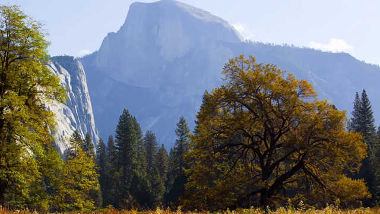
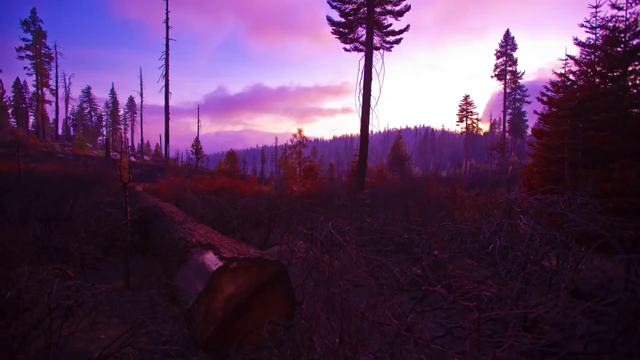
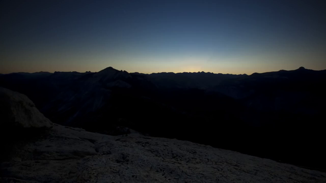
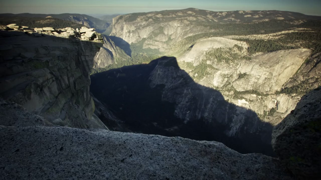
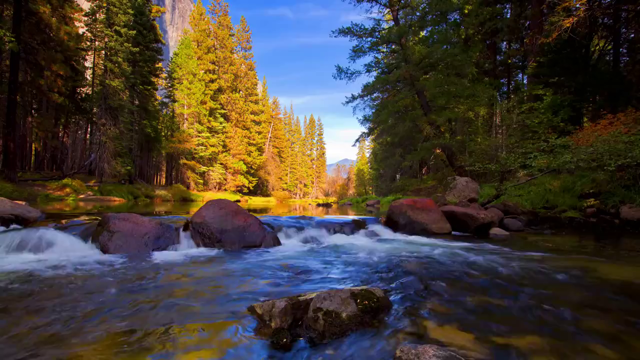
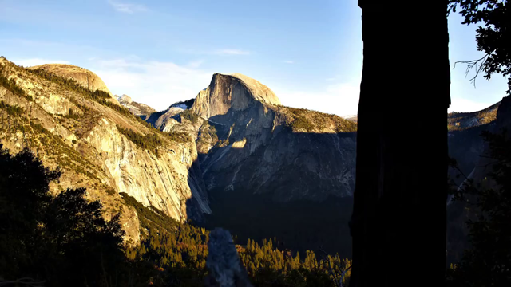
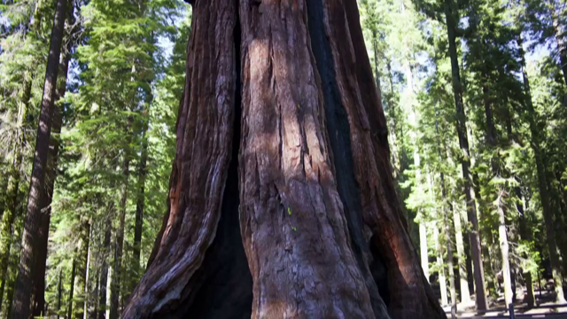
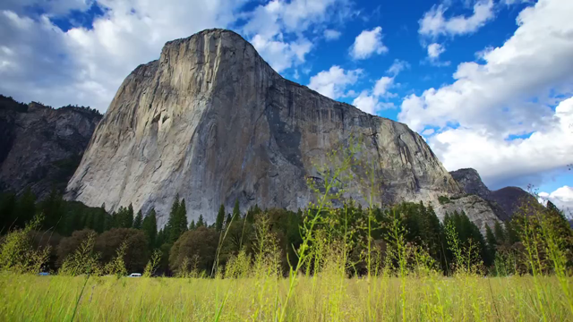

Thumbnails (iframe / scene change) - 2017
If we want to extract just a single frame (-vframes 1) from the video (Yosemite) into an image file, we do:
ffmpeg -i yosemiteA.mp4 -ss 00:00:18.123 -f image2 -vframes 1 yosemite.png
- ss: set the start time offset.
- f: force format.
- vframes: set the number of video frames to record.
- image2: to extract the frames in separate png files, we need to force the image2 muxer. When we extract just one frame, we can opt out "-f image2" from the command above:
ffmpeg -i yosemiteA.mp4 -ss 00:00:18.123 -frames:v 1 yosemite.png
The command will seek to the position of 0h:0m:18sec:123msec into the movie and extract one frame (-vframes 1) from that position into a yosemite.png file:
If the -ss comes before -i, it will also produce one image frame (yosemite.png) somewhere around the 18 seconds from the beginning of the movie. The input will be parsed using keyframes, which is very fast. The drawback is that it will also finish the seeking at some keyframe, not necessarily located at specified time (00:00:18.123), so the seeking may not be as accurate as expected.
However, in our example, since we did put -ss after -i, it produced one image frame precisely at the requested time from the beginning of the movie. In this case, the input will be decoded until it reaches the position given by -ss. This will be done very slowly, frame by frame. The advantage is that we'll get the frame at the right time, but the drawback is that it will take a lot of time until it finally reaches that time point. The bigger the seeking time is, the longer you will have to wait. - from Seeking with FFmpeg.
Now, we want to extract thumbnails periodically. The following command will create one thumbnail image every 10 second.
ffmpeg -i yosemiteA.mp4 -f image2 -vf fps=fps=1/10 ythumb%3d.png
This will create thumbnail images, named ythumb001.png, ythumb002.png, ythumb003.png, etc. Here %03d means that ordinal number of each thumbnail image should be formatted using 3 digits.
The following command will create one thumbnail image every I-frame, named yi01.png, yi02.jpg, yi03.png...yi116
ffmpeg -i yosemiteA.mp4 -f image2 -vf "select='eq(pict_type,PICT_TYPE_I)'" -vsync vfr yi%03d.png
- "select='eq(pict_type,PICT_TYPE_I)'": extracts I-frame image
- vsync: video sync method.
- vfr: variable frame rate.
We can use another form of equivalent select filter as shown below:
ffmpeg -i yosemiteA.mp4 -f image2 -vf "select=eq(pict_type\,PICT_TYPE_I)" -vsync vfr yi%03d.png
Note that we needed "\" to eacape "," which is necessary because filters in a chain should be separated by commas (see FFmpeg Filtering Guide).
The previous command used single quote(') instead while not using escape for the comma.
The following python code extracts i-frames.
Input is required, but output is optional. It's using the following ffmpeg command:
ffmpeg -i inFile -f image2 -vf "select='eq(pict_type,PICT_TYPE_I)'" -vsync vfr oString%03d.png
Example:
- "python iframe.py -i yosemite.mp4" will output 'out001.png', 'out002.png', and so on.
- "python iframe.py -i yosemite.mp4 -o yos" will output 'yos001.png', 'yos002.png', and so on.
'''
iframe.py - ffmpeg i-frame extraction
'''
import sys, getopt, os
import subprocess
# ffmpeg -i inFile -f image2 -vf "select='eq(pict_type,PICT_TYPE_I)'" -vsync vfr oString%03d.png
def main(argv):
inFile = ''
oString = 'out'
usage = 'usage: python iframe.py -i <inputfile> [-o <oString>]'
try:
opts, args = getopt.getopt(argv,"hi:o:",["ifile=","oString="])
except getopt.GetoptError:
print usage
sys.exit(2)
for opt, arg in opts:
if opt == '-h':
print usage
sys.exit()
elif opt in ("-i", "--ifile"):
inFile = arg
elif opt in ("-o", "--oString"):
oString = arg
print 'Input file is "', inFile
print 'oString is "', oString
# need input, otherwise exit
if inFile == '':
print usage
sys.exit()
# start extracting i-frames
home = os.path.expanduser("~")
ffmpeg = home + '/bin/ffmpeg'
outFile = oString + '%03d.png'
cmd = [ffmpeg,'-i', inFile,'-f', 'image2','-vf',
"select='eq(pict_type,PICT_TYPE_I)'",'-vsync','vfr',outFile]
print cmd
subprocess.call(cmd)
if __name__ == "__main__":
main(sys.argv[1:])
Note: in my case, the ffmpeg command is in ~/bin directory.
File is available: FFMpeg/iframe.py.
Using the select filter again, the following command selects only frames that have more than 50% of changes compared to previous scene and generates pngs.
ffmpeg -i yosemiteA.mp4 -vf "select=gt(scene\,0.5), scale=640:360" -vsync vfr yosemiteThumb%03d.png
This created fewer number of images (22 compared with 116 i-frame selection) while capturing significant scene changes:
|  |  | ||||||||
|  |  |  |  |  | |||||
|  |
This is not much different from previous samples. But the code below includes the video download from YouTube. After downloading a video, it extracts iframes and store them subfolder that named after the video file name:
'''
iframe_extract.py - download video and ffmpeg i-frame extraction
Usage:
(ex) python iframe_extract.py -u https://www.youtube.com/watch?v=dP15zlyra3c
This code does two things:
1. Download using youtube-dl
2. Extract i-frames via ffmpeg
'''
from __future__ import unicode_literals
import youtube_dl
import sys
import os
import subprocess
import argparse
import glob
def iframe_extract(inFile):
# extract i-frame using ffmpeg
# ffmpeg -i inFile -f image2 -vf \
# "select='eq(pict_type,PICT_TYPE_I)'" -vsync vfr oString%03d.png
# infile : video file name
# (ex) 'FoxSnowDive-Yellowstone-BBCTwo.mp4'
imgPrefix = inFile.split('.')[0]
# imgPrefix : image file
# start extracting i-frames
home = os.path.expanduser("~")
ffmpeg = home + '/bin/ffmpeg'
imgFilenames = imgPrefix + '%03d.png'
cmd = [ffmpeg,'-i', inFile,'-f', 'image2','-vf',
"select='eq(pict_type,PICT_TYPE_I)'",'-vsync','vfr', imgFilenames]
# create iframes
subprocess.call(cmd)
# Move the extracted iframes to a subfolder
# imgPrefix is used as a subfolder name that stores iframe images
cmd = 'mkdir -p ' + imgPrefix
os.system(cmd)
mvcmd = 'mv ' + imgPrefix + '*.png ' + imgPrefix
os.system(mvcmd)
def get_info_and_download(download_url):
# Get video meta info and then download using youtube-dl
ydl_opts = {}
# get meta info from the video
with youtube_dl.YoutubeDL(ydl_opts) as ydl:
meta = ydl.extract_info(
download_url, download=False)
# download the video
# remove non-alpha-numeric such as ' ', '(', etc.
# video_out = ''.join(c for c in meta['title'] if c.isalnum()) + '.'+ meta['ext']
out = meta['title'].replace(' ','')
extension = meta['ext']
video_out = out + '.' + extension
cmd = ['youtube-dl', '-k', '-o', video_out, download_url]
subprocess.call(cmd)
# Sometimes output file has format code in name such as 'out.f248.webm'
# so, in this case, we want to rename it 'out.webm'
glob_str = '*.' + extension
for f in glob.glob(glob_str):
if out in f:
if os.path.isfile(f):
video_out = f
break
# call iframe-extraction : ffmpeg
iframe_extract(video_out)
return meta
def check_arg(args=None):
# Command line options
# Currently, only the url option is used
parser = argparse.ArgumentParser(description='download video')
parser.add_argument('-u', '--url',
help='download url',
required='True')
parser.add_argument('-i', '--infile',
help='input to iframe extract')
parser.add_argument('-o', '--outfile',
help='output name for iframe image')
results = parser.parse_args(args)
return (results.url,
results.infile,
results.outfile)
'''
Usage sample:
syntax: python iframe_extract.py -u url
(ex) python iframe_extract.py -u https://www.youtube.com/watch?v=dP15zlyra3c
'''
if __name__ == '__main__':
u,i,o = check_arg(sys.argv[1:])
meta = get_info_and_download(u)
Source code is available from Github (FFMpeg/iframe_extract.py)
The code not only works for Youtube but also works for Viemo. The following iframes are from Vimeo: Twin Peaks San Francisco Sunrise (HDR time-lapse):
$ python iframe_extract.py -u https://vimeo.com/1635766
For mosaic or tiles, please visit
Creating a mosaic/tile of screenshots from a movie.
Ph.D. / Golden Gate Ave, San Francisco / Seoul National Univ / Carnegie Mellon / UC Berkeley / DevOps / Deep Learning / Visualization